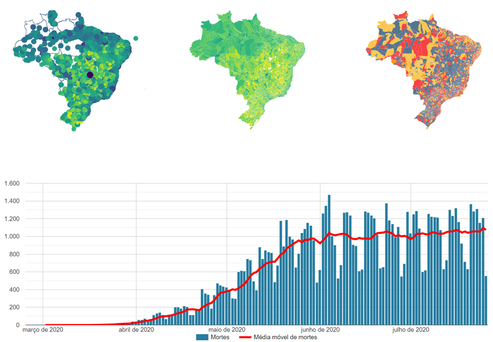
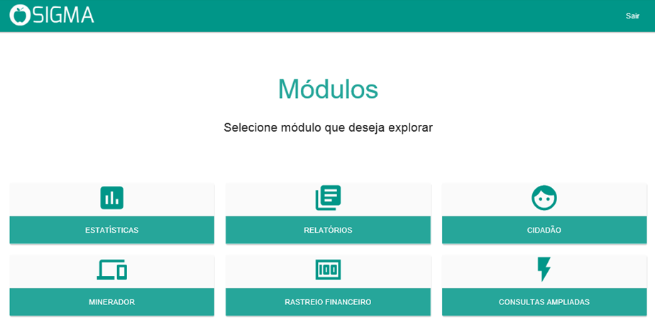
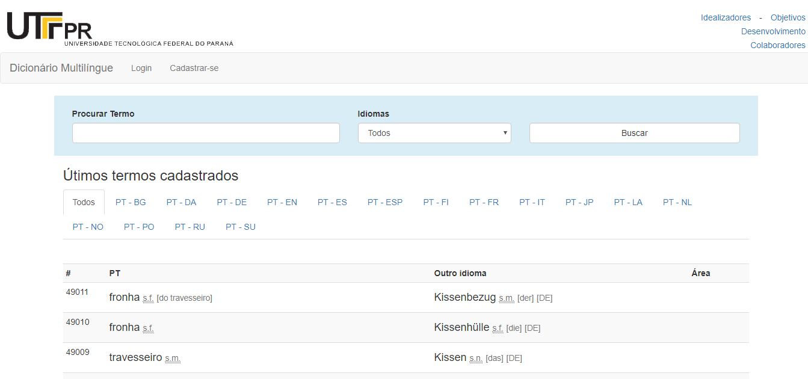

Painel com informações detalhadas sobre a pandemia - Análise nacional, estadual e municipal (link)
SAVEPI - Uma Ferramenta WEB para a Análise da Viabilidade Econômica de Projetos de Investimentos (link)
Desenvolvimento de ferramenta para gestão pública da Prefeitura de Vacaria RS
Desenvolvimento de Dicionário Multilíngue que conta com mais de 50.000 termos (link)
Estudo de um Modelo Matemático para o Corte Sustentável e Quantificação do Estoque de Carbono em uma Floresta de Eucalipto
Abaixo estão listados os trabalhos e projetos desenvolvidos